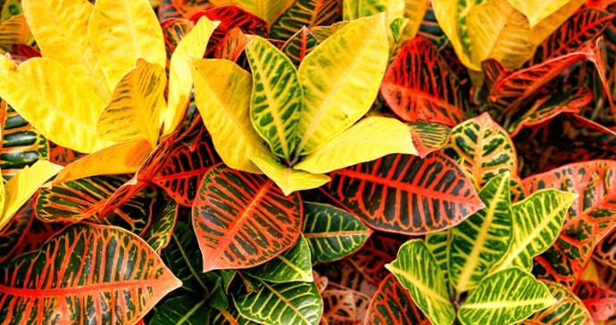
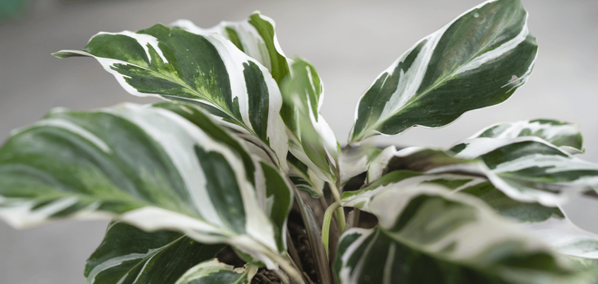
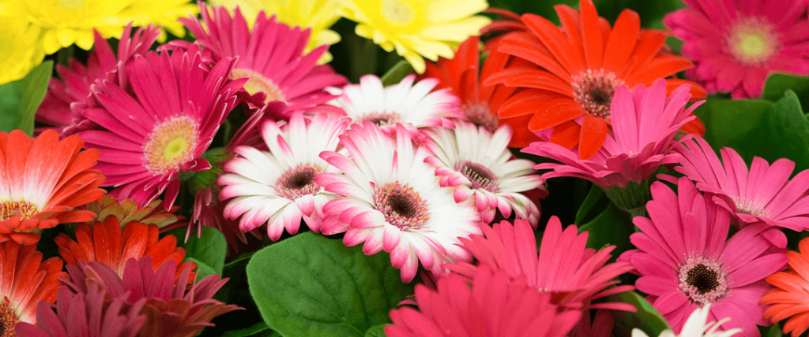
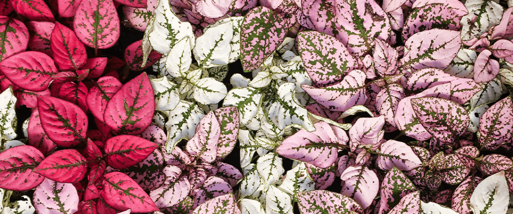

Raznobojne sobne biljke za proleće!
Dok čekate da šareni deo proleća počne napolju, zašto ne biste uneli neku privlačnu boju i stil u svoj dom sa ovim zabavnim kućnim biljkama? Ne dozvolite da se proleće zabavlja na otvorenom; neka ulepša i vaš dom iznutra!
Krotoni imaju jarke crvene, zelene i žute boje na svojim velikim listovima tokom cele godine. Oslikani izgled lišća je privlačan i jedinstven za svaki list. Krotoni su takođe super laki za brigu i mogu dugo da žive!
Crvene kineske zimzelene poznate i kao aglaoneme, su šarene sobne biljke velikih listova koje se lako održavaju. Listovi su na vrhu pegasto zeleni, sa prelepim ružičastim i žutim venama. Donja strana listova je nijansa bogate ružičaste boje sa atraktivnim prikazom ljupke žilice.
Bela je obavezno šarena, ali ova kalateja „Bela fuzija“ definitivno spada u kategoriju kućnih biljaka koje upadaju u oči. Ova kalateja ima jedinstvene varijacije svetle bele i bogate zelene boje. Boje se smenjuju u pojedinačnim šarama poput slika na svakom listu; ponekad čvrsta tamnozelena, ponekad bleda poput belog pramena, a ponekad čvrsta, oštra bela.
Crveni anturijum je jedinstvena biljka koja ima živahne, sjajne crvene mrlje na visokim vitkim stabljikama iznad tamnozelenih listova. Upadaju u oči u prostoriji, a takođe ih je prilično lako brinuti. Međutim, potrebno im je mnogo jakog svetla da bi nastavili da cvetaju.
Ciklame su lepe i šarene cvetajuće sobne biljke, a imaju i listove sa predivnim uzorkom. Cvetovi su ružičasti, ljubičasti i beli, dok listovi u obliku srca često imaju prilično simetrične šare u različitim zelenim ili belim bojama.
Gerberove glavočike su šarene i tako vesele. Dostupne su u toliko jedinstvenih boja, uključujući zamršeno raznolike vrste. Najbolji deo je što ove lepotice možete da premestite u svoje sadilice na otvorenom kada se vreme zagreje!
Nervne biljke su zelene sa upečatljivim belim, ružičastim ili crvenim venama na malim listovima. Nervne biljke su odlične za terarijume. Oni su biljka prilično niskog rasta, a gusti listovi su lep kontrast sa vašim većim biljkama.
Orhideje su uvek odlična ideja za šarene sobne biljke. Postoje neki tipovi sa veoma jedinstvenim uzorkom koji su sada dostupni i dolaze u toliko različitih boja.
Tačkasta polka dolazi u crvenoj, beloj ili ružičastoj boji. Njihovo lišće je tamnozeleno sa mrljama zabavnih boja ili „tačkama“. Svaka biljka se malo razlikuje, pri čemu neke imaju uglavnom zeleno lišće sa nekoliko tačaka, a neke koje izgledaju kao da su skoro potpuno crvene, bele ili ružičaste sa nekoliko tamnozelenih tačaka.
Triostar stromante je prelepa sobna biljka sa velikim listovima. Kao i Bela Fuzija Kalatea, ima široke trake ružičaste, bele i zelene koje izgledaju kao jedinstveno umetničko delo. Donja strana listova je prekrasna duboka magenta.
Da li već imate neku od ovih šarenih sobnih biljaka u svojoj kolekciji? Uvek je dobro vreme da dodate nekoliko novih kako biste dodali još neke privlačne varijacije i ulepšali svoj dom dok čekamo proleće.